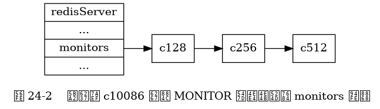
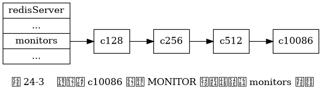

成为监视器¶
发送 MONITOR 命令可以让一个普通客户端变为一个监视器， 该命令的实现原理可以用以下伪代码来实现：
def MONITOR():
# 打开客户端的监视器标志
client.flags |= REDIS_MONITOR
# 将客户端添加到服务器状态的 monitors 链表的末尾
server.monitors.append(client)
# 向客户端返回 OK
send_reply("OK")
举个例子，
如果客户端 c10086 向服务器发送 MONITOR 命令，
那么这个客户端的 REDIS_MONITOR 标志会被打开，
并且这个客户端本身会被添加到 monitors 链表的表尾。
假设客户端 c10086 发送 MONITOR 命令之前，
monitors 链表的状态如图 24-2 所示，
那么在服务器执行客户端 c10086 发送的 MONITOR 命令之后，
monitors 链表将被更新为图 24-3 所示的状态。

